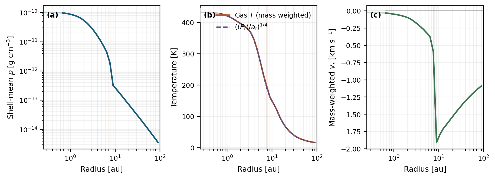
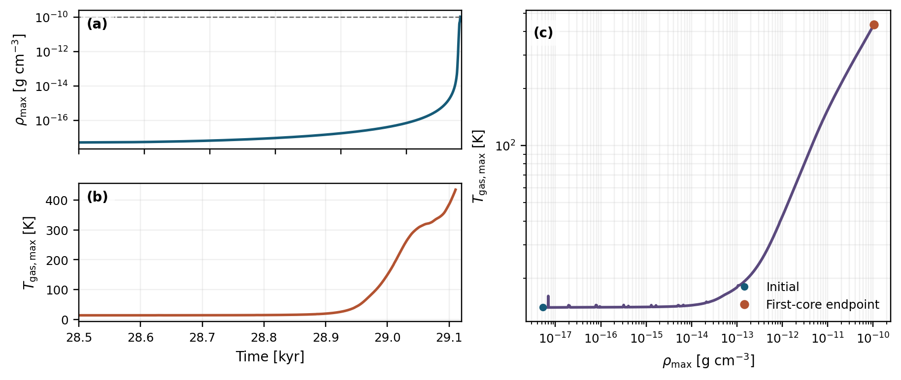
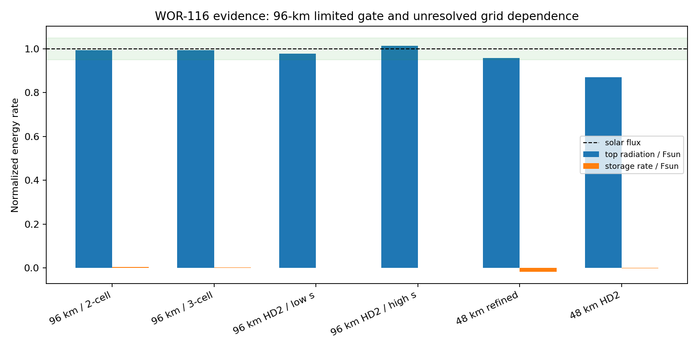

Fixed selection: tabulated-EOS protostellar collapse is the primary application. Non-magnetic solar local convection is a secondary, limited numerical application if space permits. No additional collapse production run is required for this selection.
Decision, claims, and caption drafts · machine-readable provenance · full collapse figure reviewer · solar gate report

d397daa7…f8549ee6.
a5764dda…e2bcad5.Claim boundary: the run demonstrates stable 3D Cartesian-AMR evolution with the stated tabulated EOS and variable opacity through a first-core candidate. It does not establish a matched Mayer et al. reproduction, second-core formation, table validation, or convergence of the grid-aligned angular imprint. The radial panels hide 20–30% density differences in some exterior shells.

| Collapse execution | ff60f8f07842…, XD jobs
338469/338485/338486 |
|---|---|
| Publication solver tree | c4ab200383c7317a2feccc50aa9578d5cf71478d |
| Figure integration | Documentation-only; the solver tree is unchanged. |
| Solar source status | Historical evidence is hash-audited. Clean WOR-174 is a separate default-off candidate pending mature A/B evaluation. |